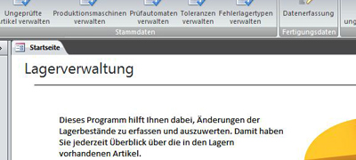

<div id="portfolio" class="clear" style="text-align: center;">
    VBA-Programmierung | Excel-Formeloptimierung | Access-Entwicklung | Word-Automatisierung | Low-Cost-Lösungen
    <ul>
        <li><a class="lightbox" href="images/Deployer.jpg" title="Excel-Tool zur automatischen Verteilung von Dateien."></a></li>
        <li><a class="lightbox" href="images/Lagerverwaltung.jpg" title="Access-Datenbank zu Verwaltung von Lagerbeständen."></a></li>
        <li><a class="lightbox" href="images/Editor.jpg" title="Sauber strukturierter und gut dokumentierter Source Code."></a></li>
        <li><a class="lightbox" href="images/Autocoder.jpg" title="Excel-Tool zur automatischen Text-Vervielfältigung."></a></li>
    </ul>
</div> <!-- Portfolio -->
